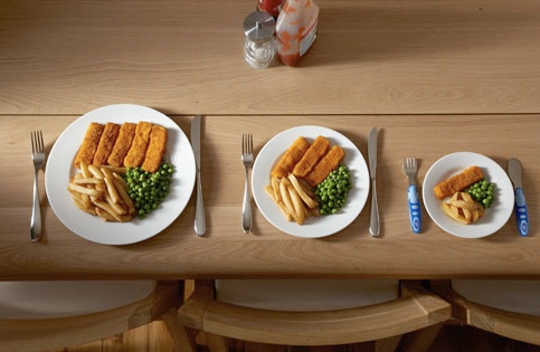
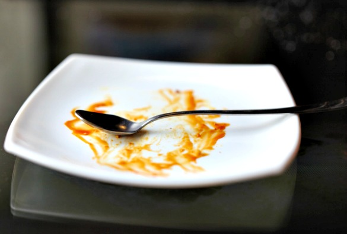
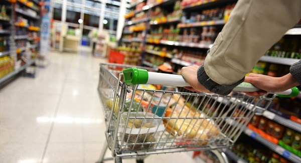
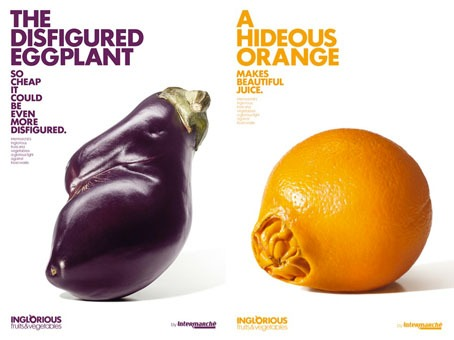
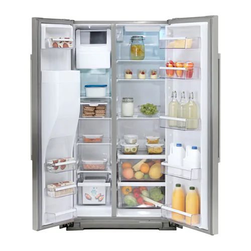

Practising अन्न Schützen

All the efforts by the government and organizations would not succeed if there is no individual involvement.
1.Ask for smaller portions
 Make sure you start your meals with a small portion on your plate. You can always go back for more if you’re still hungry.2. Love your leftovers
 Instead of scraping leftovers into the bin, use them as ingredients for tomorrow’s meal, or simply reheat them as the same meal again. Remember, if you want to use leftovers, it’s very important to store them in the fridge or freezer within two hours of preparing your meal.3. Shop smart
 We often buy more food than we can eat before it goes off. To avoid over-shopping, try to plan ahead, make a shopping list, and don’t go shopping on an empty stomach!
4. Buy “ugly” fruits and vegetables
 Many shops and farmers’ markets offer irregularly shaped fruit and vegetables, which are just as good to eat as regularly shaped and coloured ones. Buy “ugly” fruits and vegetables to show that you do not want any food wasted!
5. Check your fridge
 To make sure that food is properly stored and kept fresher for longer in your fridge, set it to the right temperature (between 1 and 5 °C), store products in the right places in the fridge, and follow the instructions on the packaging or the fridge manual. Don’t pack the fridge too full: you will use less energy and you’ll be less likely to forget to use the food you bought.
6. Practice FIFO: First in, First out!
When you put your shopping away, rotate the food in your fridge and cupboard so that the older food comes forward and the most recent shopping – which will keep the longest – goes to the back. But keep an eye on the use-by and best-before dates – some of the new food you have bought may need to be eaten quickly.
7. Understand dates on your food
After the “use-by” date has passed, food is not safe to eat anymore. “Best-before” dates, on the other hand, only show when the food is at its best quality in terms of smell, texture, and taste. If well stored, most of non-perishable food is still edible after the “best-before” date!
8. Turn waste into compost
If you do end up wasting some of your food, recover it by turning it into garden food: instead of throwing it in your regular bin and contributing to the greenhouse-gas emissions connected to the transport and disposal of waste, why not set up a compost bin for food waste and fruit and vegetable peelings?
9. Sharing is caring: Give to help
Give your surplus to help those who need it. When hygiene and sanitary conditions and traceability requirements are ensured, it’s easy to give your surplus food to those in need. Learn about existing initiatives in your cafeterias, your stores and your city to give a boost to food aid associations and reduce waste.
10. Try to reuse food packaging
11. Use it all
When cooking, use every piece of whatever food you’re cooking with, whenever possible. For example, leave the skin on cucumbers and potatoes, sauté broccoli stems along with the florets (they taste good too; we promise!), and so on. Bonus: Skins and stems often have provide additional nutrients for our bodies.